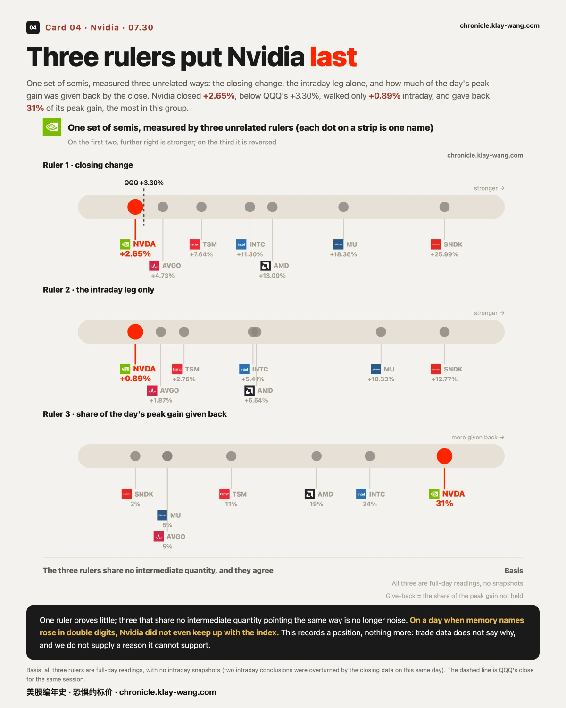
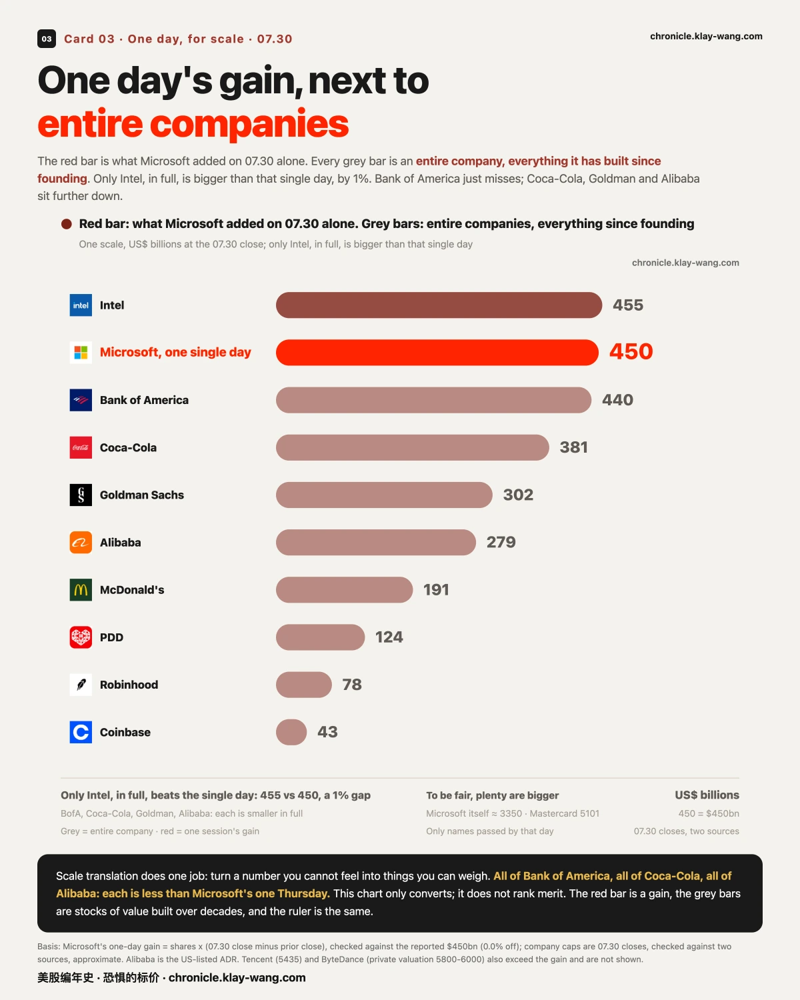
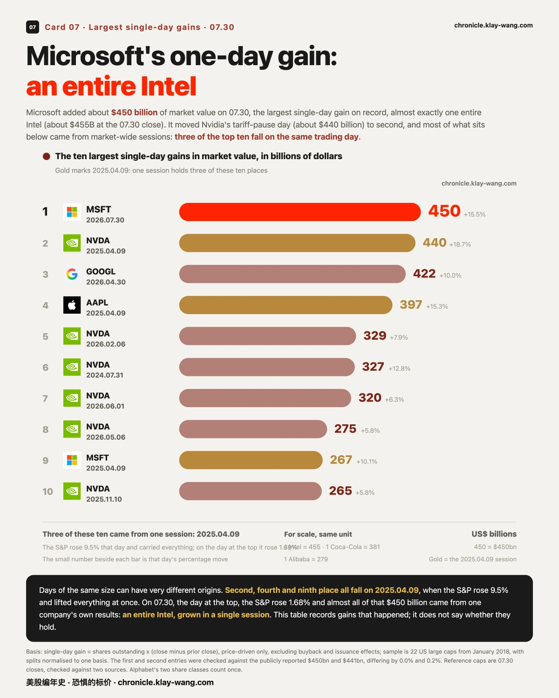
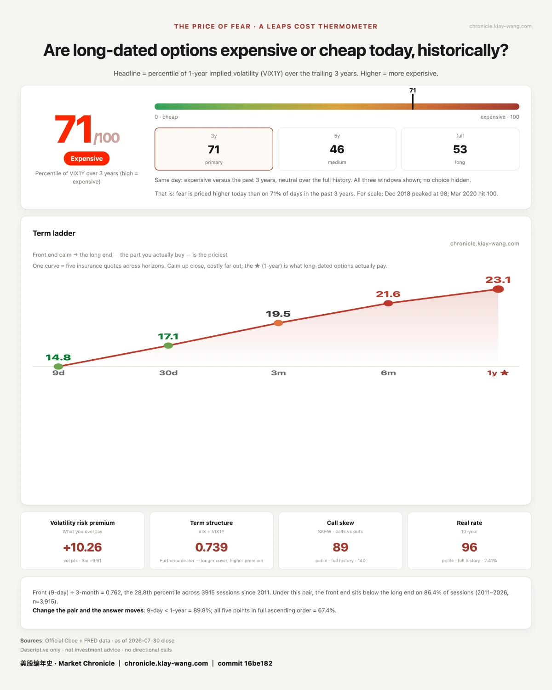

微软一天市值增加4500亿美元，美股有史以来最大 · 07-30 · 7.27-7.31
• A record: Microsoft added about $450 billion in market value, roughly an entire Intel in one day
• Memory: SanDisk closed +25.99% and is +0.14% across two days
• Forced out: a fund that once ran about $45 billion handed its public book to Citadel; 4x leverage did not live to see the bounce
At 08:30 on 07.30 three releases landed at once: the advance reading on second-quarter growth, June's core inflation, and the weekly jobless claims. By the time the bell rang, most of the day's pricing had already happened.
One more layer than usual this issue. Our method has always been: we do not predict, we respond. Price tells us the result; money tells us why. Each section gives the result first, then the funding-side explanation, and a condition you can check for yourself.
📋 Up a quarter, back to where it started
In one line: the biggest gain of the day landed on the deepest hole, and once the two cancel, nothing is left.
SanDisk closed +25.99%. Move the starting line back two sessions and it is +0.14% against the 07.27 close. Micron rose 18.36% and is still −2.84% over the same two days.
Four of these seven names share one shape: higher today, still negative across the two days. The only one meaningfully above where it was is Microsoft, at +15.93%, and that came from earnings rather than from this bounce.
The same gain, measured from a different starting point, leaves a very different residue.
One ledger line shows what such a day looks like in options. SanDisk closed at 1279.96, four cents under 1280; the 1280 call expiring the next session closed at 58.2 against 3.0 the day before, +1840% in a day. Whoever bought it got the magnitude right, yet the stock stopped four cents short of the strike: not one cent of that 58.2 is banked; all of it prices the next session. The other side of every lottery line, as always: most higher strikes on the same chain expire worthless. Not homework to copy — the anatomy of leverage.
💥 The money forced out, and the money that took the other side
In one line: the memory round trip got its heaviest funding-side piece yesterday: someone ran a thesis at 4x leverage and turned it into a forced sale.
Per Bloomberg and CNBC on 07.30, Situational Awareness, the AI hedge fund that once ran about $45 billion (larger than Coinbase's entire market cap), was forced to hand its entire public-equity book to Citadel. July's drawdown in AI and memory names landed on 4x leverage; margin calls followed from three prime brokers, and assets shrank to roughly $10 billion, about half of it an Anthropic stake that cannot be margin-called away.
The sharpest detail is the timing: six days before the handover, the founder wrote to investors calling this the most attractive setup since early 2025, inviting fresh capital by 08.01. His thesis may even have been right: memory ripped on 07.30. By then the chips were no longer his. Leverage never changes whether you are right; it changes whether you live to see it.
The link to the tape runs in three steps. First: through the deep July drawdown in memory, the market was carrying a question mark, a multi-billion leveraged book that could be forced to dump at any moment, and that expectation itself weighs on price. Second: we now know how it ended, the book was transferred to Citadel in one negotiated block, not fed into the tape. The overhang got absorbed at a single price. Third: once the source of pressure is gone, buyers no longer need to chew through size to move price a long way. That matches two things we measured: 12.77 of SanDisk's 26 points were walked after the open, while the index barely moved in the same hours. Whether the buyer was also completing its book intraday, trade data cannot see; we do not claim that step. The first three stand.
📈 Over half the index's gain came before the bell
In one line: a gap is priced overnight; the intraday leg is what someone actually bought, trade by trade.
SPY closed +1.68%, of which +0.90% was the overnight gap and only +0.77% came after the open. QQQ was the same shape: +1.97% of its +3.30% was the gap.
Memory and semis ran the other way. Of SanDisk's 26%, +12.77% came after the bell; Micron walked +10.33% and Intel +5.41% in the session itself.
On the same day, the index and memory earned their gains in different hours. Who was buying, and why, is not visible in trade data, and we do not invent it.
Reading the money: what it paid for. Options are the one place you can watch conviction get funded, and the entry most worth the ledger sits on the index: SPY's 09.04 expiry saw new prints on both sides the same day, 3075 calls 6.6% above spot (against 896 overnight open interest) and 2145 puts 8.6% below (against 514). Take the shape apart in three layers. Why not a directional bet: direction does not pay on both sides on the same day. Why not casual hedging: the expiry is oddly specific, skipping every weekly in August to land on 09.04, which our calendar shows is the August jobs report. Why the demand looks real: SPY's insurance was already priced in the top fifth of the past three years before the open, and paying up for it says more than picking it up cheap. Put together, this reads like someone funding volatility exposure into the early-September window: not a bet on up or down, but that price around jobs day does not sit still. Position or passing traffic, the 07.31 open interest column will say.
With the index sorted, one odd print: Intel showed a 1:3:3:1 stack of deep-in-the-money calls, struck a quarter below spot, one day to expiry. Ask who would not buy this: anyone betting direction would not, since it is nearly stock-equivalent yet costs a fifth more, with zero leverage; anyone betting volatility would not, since it barely responds to it. Rule those out and what remains lives in institutional back offices: rolls, synthetic stock, legs of a structure. The leg ratio is machine-neat, 2406 against 2404, two contracts apart, which reads like one order sliced, not four crowds colliding. No guessing needed: overnight open interest at those strikes was 7 and 8 contracts; a structure jumps that to the thousands on 07.31, pure churn leaves it flat.
🔎 Three rulers, and all three put Nvidia last
In one line: one ruler proves little; three that share no intermediate quantity pointing the same way is no longer noise.
The first is the closing change: Nvidia at +2.65%, below QQQ's +3.30% for the same session. The second is the intraday leg alone: +0.89%, against SanDisk's +12.77%. The third is how much of the day's peak gain was given back by the close: Nvidia gave back 31%, the most in this group of semis.
The three rulers share no intermediate quantity. On a day when memory names rose in double digits, Nvidia did not even keep up with the index.
This records a position; trade data does not explain it. But the funding side answers a different question: what the market took the lag to mean. Compare what genuine worry looked like the same day: Apple reported that evening, and its 08.07 puts struck near the money traded 4800 contracts against 586 overnight, real protection money at real prices. Nvidia's puts churned too, but 40% below spot, at pocket-change prices. Both are insurance; one is bought at the front door, the other at the horizon. The market read Nvidia as lagging, not as in trouble. If near-the-money protection gets funded on 07.31, we take this back.
🚧 Fences at mid-course: one out the top, one out the bottom
In one line: a fence is a width the market quoted for itself beforehand, not a forecast of ours.
Last issue printed four volatility fences exactly as quoted. By the 07.30 close Microsoft sat +15.93% against the anchor, outside its ±6.17% fence; Meta at −9.23% was outside its ±6.98% fence, in the opposite direction.
They had been priced as the dearest insurance in this ledger. They proved dear for good reason, just not wide enough.
Amazon and Apple reported after the 07.30 close and are both still inside. Settlement is the 07.31 close, and we come back and publish all four either way.
Beyond the fence, Microsoft's funding side left one more entry. After a 15% day, a band of puts at the 450 line for 08.07 and 08.10 was built from near-zero open interest: one strike held a single contract overnight and traded 2580. Rule out the glib reading first: someone merely renting out expensive insurance has no reason to act above the market the same day, yet calls at 470 and 480 each printed thousands alongside the put band. Puts below, calls above, and in between a stock just repriced by $450 billion; whichever way the individual legs were dealt, everything in that family of shapes is re-fortifying around a new price, not betting on a direction. And 450 is the first round number under the close, the market picking where the new valuation's floor belongs; the choice of strike is itself information. The 07.31 open interest will say whether the fortifications are a camp or a day trip.
🎢 One name crossed from the green side to the red
In one line: how much of an intraday gain is still there at the close is a separate question from whether there was one.
Twelve of these seventeen names closed higher. SPCX traded as high as +5.7% and closed at −0.31%: not a name that fell all day, but one that rose, gave all of it back, and then some.
A give-back above 100% happened once that day. The next largest was Amazon's 33%.
💰 The largest single day ever came from one earnings report
In one line: days of the same size can have very different origins.
Microsoft added about $450 billion in market value on 07.30, the largest single-day gain on record, moving Nvidia's tariff-pause day last year (about $440 billion) into second place.
For scale: that is almost exactly one entire Intel (about $455B at the 07.30 close), or 1.2 Coca-Colas ($381B), or 1.6 Alibabas ($279B). Second-place Nvidia's day was roughly one Bank of America ($440B). All reference caps are 07.30 closes, checked against two sources.
Lay out the top ten and something else shows up: second, fourth and ninth place all fall on 2025.04.09, when the S&P rose 9.5% and lifted everything at once. On 07.30, the day at the top, the S&P rose 1.68%.
That $450 billion came almost entirely from one company's own results.
🏛 One release, two directions
In one line: the same day's data, read on two different bases, gives two different pictures.
Second-quarter growth came in at 1.5%, below expectations, while consumption, roughly two thirds of the economy, ran at +3.2% annualised and well above them. Inflation split the same way: June's single month was the mildest since March 2025, while the quarterly price index in the same release rose to 5.1%.
Month and quarter point opposite ways. Nobody miscounted; two bases are answering two questions.
🌡 The thermometer: 71 / 100
My "fear thermometer" measures one thing: how much the market pays, right now, to insure the next year. The dearer the insurance, the more afraid the market is.
Today it reads 71 out of 100, which puts the price of that insurance in the dearest 29% of the past three years.
Yesterday it read 88. In a single session the price of insuring the next year came down a long way, on a day the index itself rose. Insurance gets cheaper when the people who sell it decide the thing that just happened is over. It says nothing about what comes next; it only says the people who price fear for a living marked it back down today.
Two structural facts explain why every move lately arrives oversized. First, three names closed above their own call walls (SanDisk by 28%, Intel by 30%, Micron by 9%). A wall is where the most option money is stacked, a guardrail by the road; closing above it means the road has no rail for now. Not a forecast that the car keeps going, just that nobody is selling insurance up there yet. Second, both indexes closed below their gamma flip lines. Above that line, dealer hedging leans against the market and dampens moves; below it, hedging chases the market and amplifies them both ways. Seventeen session highs packed into one hour (07.29), and a gap taking over half the index's gain (07.30), are both products of that structure. We do not guess direction; amplified amplitude is a structural fact you can check.







No investment advice. No direction calls. No market timing.